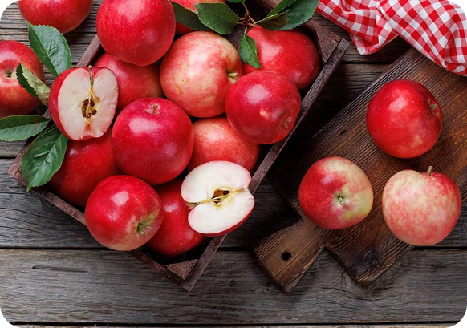
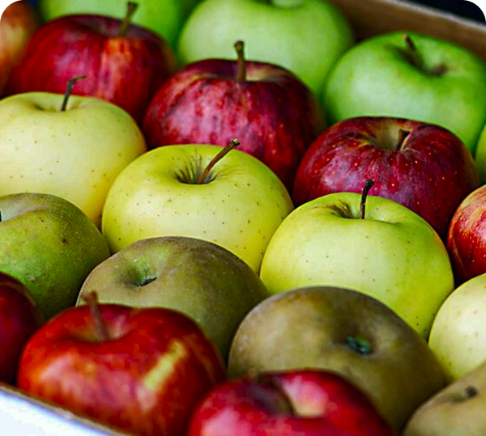

Solução IoT para o
armazenamento
de maças

Controle natural que preserva qualidade e o valor

Tecnologia que protege a sua produção
Nossa trajetória começou com a necessidade de entender e controlar um fator muitas vezes invisível, mas altamente impactante: o etileno.A partir desse desafio, desenvolvemos soluções tecnológicas capazes de monitorar e analisar ambientes de armazenamento com precisão. Nosso foco é transformar dados em decisões estratégicas, reduzindo perdas e aumentando a qualidade dos produtos. Com inovação e compromisso, buscamos tornar o processo de conservação mais eficiente, seguro e previsível. Seguimos evoluindo constantemente para atender às demandas do setor com excelência.

.png) Sobre nós
Sobre nós.png) Simulador
Simulador.png) Preços
Preços